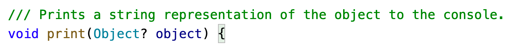
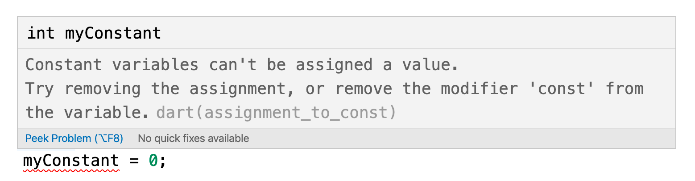

2 Expressions, Variables & Constants¶
Now that you’ve set up your Dart development environment, it’s time to start writing some Dart code!
Follow along with the coding examples in this chapter. Simply create a project for your own use, and type in the code as you work through the examples.
Commenting Code¶
Dart, like most other programming languages, allows you to document your code through the use of comments. These allow you to write text directly alongside your code, and the compiler ignores it.
The depth and complexity of the code you write can obscure the big-picture details of why you wrote your code a certain way, or even what problem your code is solving. To prevent this, it’s a good idea to document what you wrote so that the next human who passes through your code will be able to make sense of your work. That next human, after all, may be a future you!
The first way to write a comment in Dart is by starting a line with two forward slashes:
// This is a comment. It is not executed.
This is a single-line comment.
You can stack up single-line comments to allow you to write multi-line comments as shown below:
// This is also a comment,
// over multiple lines.
You may also create comment blocks by putting your comment text between /* and */:
/* This is also a comment. Over many...
many...
many lines. */
The start is denoted by /* and the end is denoted by */.
Dart also allows you to nest comments, like so:
/* This is a comment.
/* And inside it is
another comment. */
Back to the first. */
In addition to these two ways of writing comments, Dart also has a third type called documentation comments. Single-line documentation comments begin with ///, while block documentation comments are enclosed between /** and */. Here’s an example of each:
/// I am a documentation comment
/// at your service.
/**
* Me, too!
*/
Documentation comments are super useful because you can use them to generate…you guessed it…documentation! You’ll want to add documentation comments to your code whenever you have a public API so that the users, and your future self, will know how your API works. Although this book won’t go into depth on this, documentation comments even support Markdown formatting so that you can add elements like code examples or links to your comments.
Note
An API, or application programming interface, is code that you share with other people or programs. You’ll learn how to make your own API in Dart Apprentice: Beyond the Basics.
The Flutter and Dart documentation is well-known for its detailed comments. And since the code for Flutter and Dart is open source, simply browsing through it is an excellent way to learn how great documentation comments are written.
In fact, you can try browsing that documentation right now. Take the Hello Dart program from Chapter 1, “Hello, Dart!”:
void main() {
print('Hello, Dart!');
}
In VS Code, Command+Click on a Mac, or Control+Click on a PC, the print keyword. VS Code will take you to the source code for that keyword and you’ll see the documentation comments for print:

Speaking of print, that’s another useful tool when writing Dart code.
Printing Output¶
print will output whatever you want to the debug console.
For example, consider the following code:
print('Hello, Dart Apprentice reader!');
Run this code and it’ll output a nice message to the debug console, like so:
Adding print statements into your code is an easy way to monitor what’s happening at a particular point in your code. Later, when you’re ready to take your debugging to the next level, you can check out some of the more detailed logging packages on pub.dev.
You can print any expression in Dart. To learn what an expression is, though, keep reading.
Statements and Expressions¶
Two important words that you’ll often hear thrown about in programming language documentation are statement and expression. It’s helpful to understand the difference between the two.
Statements¶
A statement is a command, something you tell the computer to do. In Dart, all simple statements end with a semicolon. You’ve already seen that with the print statement:
print('Hello, Dart Apprentice reader!');
The semicolon on the right finishes the statement.
People coming from languages that don’t require semicolons may think they’re unnecessary. However, due to Dart’s special syntax and features, semicolons give the compiler the context it needs to properly understand the code.
In addition to simple statements, Dart also has complex statements and code blocks that use curly braces, but there’s no need to add semicolons after the braces.
One example of a complex statement is the if statement:
if (someCondition) {
// code block
}
No semicolons are needed on the lines with the opening or closing curly braces. You’ll learn more about if statements and other control flow statements in Chapter 5, “Control Flow”.
Expressions¶
Unlike a statement, an expression doesn’t do something; it is something. That is, an expression is a value, or is something that can be calculated as a value.
Here are a few examples of expressions in Dart:
42
3 + 2
'Hello, Dart Apprentice reader!'
x
The values can be numbers, text, or some other type. They can even be variables such as x, whose value isn’t known until runtime.
Coming up next, you’ll see many more examples of expressions.
Arithmetic Operations¶
In this section, you’ll learn about the various arithmetic operations that Dart has to offer by seeing how they apply to numbers. In later chapters, you’ll learn about operations for types beyond simple numbers.
Simple Operations¶
Each operation in Dart uses a symbol known as the operator to denote the type of operation it performs. Consider the four arithmetic operations you learned in your early school days: addition, subtraction, multiplication and division. For these simple operations, Dart uses the following operators:
- Add:
+ - Subtract:
- - Multiply:
* - Divide:
/
These operators are used like so:
2 + 6
10 - 2
2 * 4
24 / 3
Each of these lines is an expression because each can be calculated down to a value. In these cases, all four expressions have the same value: 8. Notice how the code looks similar to how you would write the operations out with pen and paper.
Check the answers yourself in VS Code using a print statement:
print(2 + 6);
Note
If you print the result the expression 24 / 3 in VS Code, you’ll see 8.0 rather than 8. This is because the output of the division operator is a double. You’ll learn more about double later in this chapter and in Chapter 3, “Types & Operations”.
On the other hand, if you print 24 / 3 on dartpad.dev, you’ll only see 8. That’s because on the web, Dart compiles your code to JavaScript, and JavaScript doesn’t differentiate between 8 and 8.0.
Dart ignores whitespace, so you can remove the spaces surrounding the operator:
2+6
However, it’s often easier to read expressions when you have white space on either side. In fact, the dart format tool in the Dart SDK will format your code according to the standard whitespace formatting rules. In VS Code, you can apply dart format with the keyboard shortcut Shift+Option+F on a Mac or Shift+Alt+F on a PC. Depending on your VS Code settings, saving the file may also trigger an auto-format.
Note
This book won’t always explicitly tell you to print(X), where X is some Dart expression that you’re learning about, but you should proactively do this yourself to check the value.
Decimal Numbers¶
All of the operations above use whole numbers, more formally known as integers. However, as you know, not every number is whole.
For example, consider the following:
22 / 7
If you’re used to another language that uses integer division by default, you might expect the result to be 3. However, Dart gives you the standard decimal answer:
3.142857142857143
If you actually did want to perform integer division, then you could use the ~/operator:
22 ~/ 7
This produces a result of 3.
The ~/ operator is officially called the truncating division operator when applied to numbers. If you squint, the tilde kind of looks like an elephant trunk, so that might help you remember what it does. Or not.
The Euclidean Modulo Operation¶
Dart also has more complex operations you can use. All of them are standard mathematical operations, just not as common as the others. You’ll take a look at them now.
The first of these is the Euclidean modulo operation. That’s a complex name for an easy task. In division, the denominator goes into the numerator a whole number of times, plus a remainder. This remainder is what the Euclidean modulo operation calculates. For example, 10 modulo 3 equals 1, because 3 goes into 10 three times, with a remainder of 1.
In Dart, the Euclidean modulo operator is the % symbol. You use it like so:
28 % 10
In this case, the result is 8, because 10 goes into 28 twice with a remainder of 8.
Order of Operations¶
Of course, it’s likely that when you calculate a value, you’ll want to use multiple operators. Here’s an example of how to do this in Dart:
((8000 / (5 * 10)) - 32) ~/ (29 % 5)
Note the use of parentheses, which in Dart serve two purposes: to make it clear to anyone reading the code — including yourself — what you meant, and to disambiguate the intended order of operations.
For example, consider the following:
350 / 5 + 2
Does this equal 72 (350 divided by 5, plus 2) or 50 (350 divided by 7)? Those of you who paid attention in school are shouting, “72”! And you’re right.
Dart uses the same reasoning and achieves this through what’s known as operator precedence. The division operator (/) has higher precedence than the addition operator (+), so in this example, the code executes the division operation first.
If you wanted Dart to perform the addition first — that is, so the expression will return 50 instead of 72 — then you could use parentheses, like so:
350 / (5 + 2)
The precedence rules are the same as you learned in school. Multiplication and division have equal precedence. Addition and subtraction are equal in precedence to each other, but are lower in precedence than multiplication and division.
The ~/ and % operators have the same precedence as multiplication and division. If you’re ever uncertain about what precedence an operator has, you can always use parentheses to be sure the expression evaluates as you want it to.
Math Functions¶
Dart also has a large range of math functions. You never know when you’ll need to flex those trigonometry muscles, especially when you’re a pro at Dart and writing complex animations!
To use these math functions, add the following import to the top of your file:
import 'dart:math';
dart:math is one of Dart’s core libraries. Adding the import statement tells the compiler that you want to use something from that library.
Now you can write the following:
sin(45 * pi / 180)
// 0.7071067811865475
cos(135 * pi / 180)
// -0.7071067811865475
These convert an angle from degrees to radians, and then compute the sine and cosine respectively. Notice how both make use of pi, which is a constant Dart provides you. Nice!
Note
Remember that if you want to see the values of these mathematical expressions, you need to put them inside a print statement like this:
print(sin(45 * pi / 180));
Then there’s this:
sqrt(2)
// 1.4142135623730951
This computes the square root of 2.
Not mentioning these would be a shame:
max(5, 10)
// 10
min(-5, -10)
// -10
These compute the maximum and minimum of two numbers respectively.
If you’re particularly adventurous you can even combine these functions like so:
max(sqrt(2), pi / 2)
// 1.5707963267948966
Exercise¶
Print the value of 1 over the square root of 2. Confirm that it equals the sine of 45°.
This is your first exercise. You can find the answers in the challenge folder in the supplemental materials that come with this book.
Naming Data¶
At its simplest, computer programming is all about manipulating data because everything you see on your screen can be reduced to numbers. Sometimes you represent and work with data as various types of numbers, but other times, the data comes in more complex forms such as text, images and collections.
In your Dart code, you can give each piece of data a name you can use to refer to that piece of data later. The name carries with it an associated type that denotes what sort of data the name refers to, such as text, numbers, or a date. You’ll learn about some of the basic types in this chapter, and you’ll encounter many other types throughout this book.
Variables¶
Take a look at the following:
int number = 10;
This statement declares a variable called number of type int. It then sets the value of the variable to the number 10. The int part of the statement is known as a type annotation, which tells Dart explicitly what the type is.
Note
Thinking back to operators, here’s another one. The equals sign, =, is known as the assignment operator because it assigns a value to a variable. This is different than the equals sign you are familiar with from math. That equals sign is more like the == equality operator in Dart, which you’ll learn about in Chapter 5, “Control Flow”.
A variable is called a variable because its value can change. If you want to change the value of a variable, then you can just give it a different value of the same type:
int number = 10;
number = 15;
number started as 10 but then changed to 15.
The type int can store integers. The way you store decimal numbers is like so:
double apple = 3.14159;
This is similar to the int example. This time, though, the variable is a double, a type that can store decimals with high precision.
For readers who are familiar with object-oriented programming, you’ll be interested to learn that 10, 3.14159 and every other value that you can assign to a variable are objects in Dart. In fact, Dart doesn’t have the primitive variable types that exist in some languages. Everything is an object. Although int and double look like primitives, they’re subclasses of num, which is a subclass of Object.
With numbers as objects, this lets you do some interesting things:
10.isEven
// true
3.14159.round()
// 3
Note
Don’t worry if you’re not familiar with object-oriented programming. You’ll learn all about it as you progress through this book series.
Type Safety¶
Dart is a type-safe language. That means once you tell Dart what a variable’s type is, you can’t change it later. Here’s an example:
int myInteger = 10;
myInteger = 3.14159; // No, no, no. That's not allowed :]
3.14159 is a double, but you already defined myInteger as an int. No changes allowed!
Dart’s type safety will save you countless hours when coding since the compiler will tell you immediately whenever you try to give a variable the wrong type. This prevents you from having to chase down bugs after you experience runtime crashes.
Of course, sometimes it’s useful to be able to assign related types to the same variable. That’s still possible. For example, you could solve the problem above, where you want myNumber to store both an integer and floating-point value, like so:
num myNumber;
myNumber = 10; // OK
myNumber = 3.14159; // OK
myNumber = 'ten'; // No, no, no.
The num type can be either an int or a double, so the first two assignments work. However, the string value 'ten' is of a different type, so the compiler complains.
Now, if you like living dangerously, you can throw safety to the wind and use the dynamic type. This lets you assign any data type you like to your variable, and the compiler won’t warn you about anything.
dynamic myVariable;
myVariable = 10; // OK
myVariable = 3.14159; // OK
myVariable = 'ten'; // OK
But, honestly, don’t do that. Friends don’t let friends use dynamic. Your life is too valuable for that.
In Chapter 3, “Types & Operations”, you’ll learn more about types.
Type Inference¶
Dart is smart in a lot of ways. You don’t even have to tell it the type of a variable, and Dart can still figure out what you mean. The var keyword says to Dart, “Use whatever type is appropriate.”
var someNumber = 10;
There’s no need to tell Dart that 10 is an integer. Dart infers the type and makes someNumber an int. Type safety still applies, though:
var someNumber = 10;
someNumber = 15; // OK
someNumber = 3.14159; // No, no, no.
Trying to set someNumber to a double will result in an error. Your program won’t even compile. Quick catch; time saved. Thanks, Dart!
Constants¶
Dart has two different types of “variables” whose values never change. They are declared with the const and final keywords, and the following sections will show the difference between the two.
Const Constants¶
Variables whose value you can change are known as mutable data. Mutables certainly have their place in programs, but can also present problems. It’s easy to lose track of all the places in your code that can change the value of a particular variable. For that reason, you should use constants rather than variables whenever possible. These unchangeable variables are known as immutable data.
To create a constant in Dart, use the const keyword:
const myConstant = 10;
Just as with var, Dart uses type inference to determine that myConstant is an int.
Once you’ve declared a constant, you can’t change its data. For example, consider the following example:
const myConstant = 10;
myConstant = 0; // Not allowed.
The previous code produces an error:
Constant variables can't be assigned a value.
In VS Code, you would see the error represented this way:

If you think “constant variable” sounds a little oxymoronic, just remember that it’s in good company: virtual reality, advanced BASIC, readable Perl and internet security.
Final Constants¶
Often, you know you’ll want a constant in your program, but you don’t know what its value is at compile time. You’ll only know the value after the program starts running. This kind of constant is known as a runtime constant.
In Dart, const is only used for compile-time constants; that is, for values that can be determined by the compiler before the program ever starts running.
If you can’t create a const variable because you don’t know its value at compile time, then you must use the final keyword to make it a runtime constant. There are many reasons you might not know a value until after your program is running. For example, you might need to fetch a value from the server, or query the device settings, or ask a user to input their age.
Here is another example of a runtime value:
final hoursSinceMidnight = DateTime.now().hour;
DateTime.now() is a Dart function that tells you the current date and time when the code is run. Adding hour to that tells you the number of hours that have passed since the beginning of the day. Since that code will produce different results depending on the time of day, this is most definitely a runtime value. So to make hoursSinceMidnighta constant, you must use the final keyword instead of const.
If you try to change the final constant after it’s already been set:
hoursSinceMidnight = 0;
this will produce the following error:
The final variable 'hoursSinceMidnight' can only be set once.
You don’t actually need to worry too much about the difference between const and final constants. As a general rule, try const first, and if the compiler complains, then make it final. The benefit of using const is it gives the compiler the freedom to make internal optimizations to the code before compiling it.
No matter what kind of variable you have, though, you should give special consideration to what you call it.
Using Meaningful Names¶
Always try to choose meaningful names for your variables and constants. Good names act as documentation and make your code easy to read.
A good name specifically describes the role of a variable or constant. Here are some examples of good names:
personAgenumberOfPeoplegradePointAverage
Often a bad name is simply not descriptive enough. Here are some examples of bad names:
atempaverage
The key is to ensure that you’ll understand what the variable or constant refers to when you read it again later. Don’t make the mistake of thinking you have an infallible memory! It’s common in computer programming to look back at your own code as early as a day or two later and have forgotten what it does. Make it easier for yourself by giving your variables and constants intuitive, precise names.
Also, note how the names above are written. In Dart, it’s standard to use lowerCamelCase for variable and constant names. Follow these rules to properly case your names:
- Start with a lowercase letter.
- If the name is made up of multiple words, join them together and start every word after the first one with an uppercase letter.
- Treat abbreviations like words, for example,
sourceUrlandurlDescription.
Exercises¶
If you haven’t been following along with these exercises in VS Code, now’s the time to create a new project and try some exercises to test yourself!
- Declare a constant of type
intcalledmyAgeand set it to your age. - Declare a variable of type
doublecalledaverageAge. Initially, set the variable to your own age. Then, set it to the average of your age and your best friend’s age. - Create a constant called
testNumberand initialize it with whatever integer you’d like. Next, create another constant calledevenOddand set it equal totestNumbermodulo2. Now changetestNumberto various numbers. What do you notice aboutevenOdd?
Increment and Decrement¶
A common operation that you’ll need is to be able to increment or decrement a variable. In Dart, this is achieved like so:
var counter = 0;
counter += 1;
// counter = 1;
counter -= 1;
// counter = 0;
The counter variable begins as 0. The increment sets its value to 1, and then the decrement sets its value back to 0.
The += and -= operators are similar to the assignment operator (=), except they also perform an addition or subtraction. They take the current value of the variable, add or subtract the given value, and assign the result back to the variable.
In other words, the code above is shorthand for the following:
var counter = 0;
counter = counter + 1;
counter = counter - 1;
If you only need to increment or decrement by 1, then you can use the ++ or --operators:
var counter = 0;
counter++; // 1
counter--; // 0
The *= and /= operators perform similar operations for multiplication and division, respectively:
double myValue = 10;
myValue *= 3; // same as myValue = myValue * 3;
// myValue = 30.0;
myValue /= 2; // same as myValue = myValue / 2;
// myValue = 15.0;
Division in Dart produces a result with a type of double, so myValue could not be an int.
Challenges¶
Before moving on, here are some challenges to test your knowledge of variables and constants. It’s best if you try to solve them yourself, but solutions are available with the supplementary materials for this book if you get stuck.
Challenge 1: Variable Dogs¶
Declare an int variable called dogs and set that equal to the number of dogs you own. Then imagine you bought a new puppy and increment the dogs variable by one.
Challenge 2: Make It Compile¶
Given the following code:
age = 16;
print(age);
age = 30;
print(age);
Modify the first line so that the code compiles. Did you use var, int, final or const?
Challenge 3: Compute the Answer¶
Consider the following code:
const x = 46;
const y = 10;
Work out what each answer equals when you add the following lines of code to the code above:
const answer1 = (x * 100) + y;
const answer2 = (x * 100) + (y * 100);
const answer3 = (x * 100) + (y / 10);
Challenge 4: Average Rating¶
Declare three constants called rating1, rating2 and rating3 of type doubleand assign each a value. Calculate the average of the three and store the result in a constant named averageRating.
Challenge 5: Quadratic Equations¶
A quadratic equation is something of the form
a⋅x² + b⋅x + c = 0.
The values of x which satisfy this can be solved by using the equation
x = (-b ± sqrt(b² - 4⋅a⋅c)) / (2⋅a).
Declare three constants named a, b and c of type double. Then calculate the two values for x using the equation above (noting that the ± means plus or minus, so one value of x for each). Store the results in constants called root1 and root2 of type double.
Key Points¶
- Code comments are denoted by a line starting with
//, or by multiple lines bookended with/*and*/. - Documentation comments are denoted by a line starting with
///or multiple lines bookended with/**and*/. - You can use
printto write to the debug console. - The arithmetic operators are:
Addition: +
Subtraction: -
Multiplication: *
Division: /
Integer division: ~/
Modulo (remainder): %
- Dart has many functions, including
min,max,sqrt,sinandcos. - Constants and variables give names to data.
- Once you’ve declared a constant, you can’t change its data, but you can change a variable’s data at any time.
- If a variable’s type can be inferred, you can replace the type with the
varkeyword. - The
constkeyword is used for compile-time constants whilefinalis used for runtime constants. - Always give variables and constants meaningful names to save yourself and your colleagues headaches later.
- The following operators perform arithmetic and then assign back to the variable:
Add and assign: +=
Subtract and assign: -=
Multiply and assign: *=
Divide and assign: /=
Increment by 1: ++
Decrement by 1: --
Where to Go From Here?¶
In this chapter, you learned that documentation comments support Markdown formatting. If you aren’t familiar with Markdown, it would be well worth your time to learn it. Dart supports CommonMark, so commonmark.org is a good place to start.
Speaking of documentation, it’s also worth your while to develop the habit of reading source code. Read it like you would a book, whether it’s the Dart and Flutter source code, or a third-party library. This will often teach you much more than you can learn from other sources.
In the next chapter, you’ll dive even deeper into Dart’s type system. See you there!